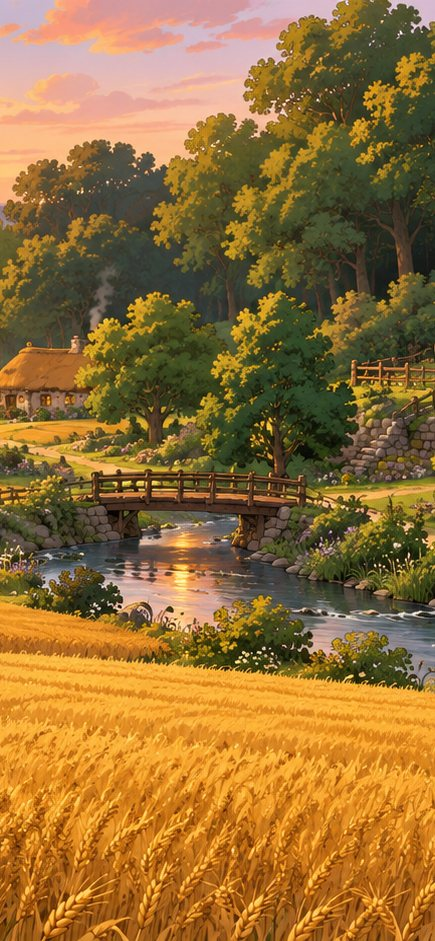
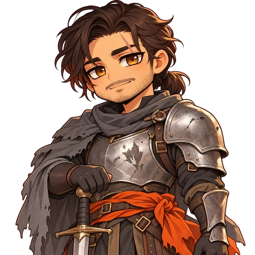
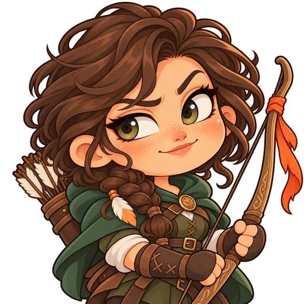

Dialoge, Entscheidungen und ihre Folgen
Szene nach Mission 1-2 in Erlbach, Entscheidung E1: Mira darf heimkehren. Der Hintergrund ist im Spiel leicht weichgezeichnet und entsättigt, damit die Figuren davor stehen. Oben rechts immer Log, Auto und Überspringen; ein Tipp irgendwo führt weiter. Zuerst zwei Varianten für die Dialogzeile, dann Entscheidung, Folgen-Karte und Dialog-Log.



Das Dorf steht noch. Ohne euch hätte Hask es angezündet wie Varnhold.
▼Klassische Visual Novel: Wer spricht, steht hell im Vordergrund, wer zuhört, gedämpft. Namensschild an der Seite der Sprecherin. Braucht die 4 Stimmungen je Kernfigur.
Das Dorf steht noch. Ohne euch hätte Hask es angezündet wie Varnhold.
Kompakter, der Ort bleibt sichtbar. Wirkt eher wie eine Sprechblase im Spiel; die Figur ist kleiner, ihr Gesicht trägt weniger Gefühl.
Schwarze Marke „hat Folgen“, damit Wahlen mit Wirkung nie mit Plauder-Antworten verwechselt werden. Erster Tipp markiert, zweiter bestätigt. Überspringen ist hier aus.
Mira kehrt heim
Direkt nach der Wahl, im Stil der Lektionen. Jede Wirkung mit Symbol; Mengen immer als Symbol + Zahl. Ein Tipp schließt.
Dialog-Log Erlbach · nach 1-2

Über „Log“ oben rechts; zeigt die Szene bis hier, eigene Wahl hervorgehoben. Kein Zurückspulen von Entscheidungen.